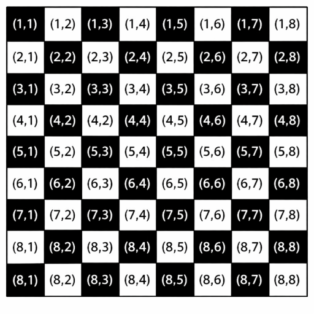

Suken Math Contest 026
- 「答えのみ」と書かれていない問題は記述をせよ。
- 丁寧な字で書くこと(特に0と6に注意)。
- 正常に表示されない場合は、質問フォームかLINEで主催者に連絡すること。
Survey
「アル」は「マンタ部」に入っている。マンタ部の部員にアンケートをとって、288人から回答を得た。 アンケートでは以下の質問をした。
[アンケート]
次のうちで、好きなものすべてにチェックを入れてください。
結果を集計した結果次のようになった。ただし、Aが好きな人の中にはA以外も好きな人も含まれることに注意せよ。
| 属性 | 人数 (人) |
|---|---|
| 何にもチェックを入れなかった | 32 |
| 数学が好き | 185 |
| 競技プログラミングが好き | 149 |
| たこ焼きが好き | 172 |
| 数学と競技プログラミングが好き | 113 |
| 数学とたこ焼きが好き | 121 |
| 競技プログラミングとたこ焼きが好き | 106 |
ここで、数学、競技プログラミング、たこ焼きがすべて好きな人の数を求めよ。
[答えのみ]
LCM of Adjacent Numbers
どんな正の整数 \(n\) に対しても、 \(n\) と \(n+1\) の最小公倍数が \(n(n+1)\) であることを証明せよ。
2026th Number
\(1,2,3,4,5,6,7\) を並べ替えて順につなげて、整数とみなしたときに、小さいほうから2026番目のものを求めよ。 例えば、小さいほうから1番目のものは \(1234567\)、2番目のものは \(1234576\) である。
[答えのみ]
Not Constant
横一列に並んだ10個の白いマスのうち0個以上を黒く塗るとき、黒いマスが連続しない塗り方は何通りあるか。
[答えのみ]
Airport
\(n\) 個の空港がある( \(n\) は3以上の整数)。2つの空港を結ぶ航路を 1 本つくるにはコストが 1 かかる。
すべての空港が航路をたどって互いに行き来できるようにしたい。
以下の問いに答えよ。ただし、必要ならば答えに \(n\) を用いること。
- 必要な最小コストを求めよ。[答えのみ]
- (i) の条件のもとでは、どの 2 空港間の道順が 1 通りに定まることを証明せよ。
- (ii) の条件のもとで、2つの空港を行き来する際に通る航路の本数の最大値としてありうる最小値を求め、その値が最小値であることを証明せよ。
(例) \(n=5\) のとき、つなぎ方によって最も遠い空港どうしの航路本数は 3 になる場合もあれば、2 にできる場合もある。この「最も遠い空港どうしの航路本数」をできるだけ小さくしたい。
Fill the Board
縦8マス、横8マスの盤面がある。上から \(i\) 行目( \(i=1,2,...,8\) )、左から \(j\) 列目( \(j=1,2,...,8\) )
にあるマスを座標 \((i,j)\) で表すこととする。
異なる2マス \(\mathrm{A}(a_{i},a_{j}), \mathrm{B}(b_{i},b_{j})\) を選ぶ。
マスA,B以外の62マスを縦1マス、横2マスのタイルと、縦2マス、横1マスのタイルで、重なったりはみ出したりすることなく敷き詰めることができるとき、敷き詰め可能と呼ぶこととする。
また、左上のマスを黒く塗り、他のマスもこれに沿って白黒の市松模様になるように塗っておく。
次のことがらを証明せよ。
>> 敷き詰め可能 ⇔ マスA,Bの色が異なる
